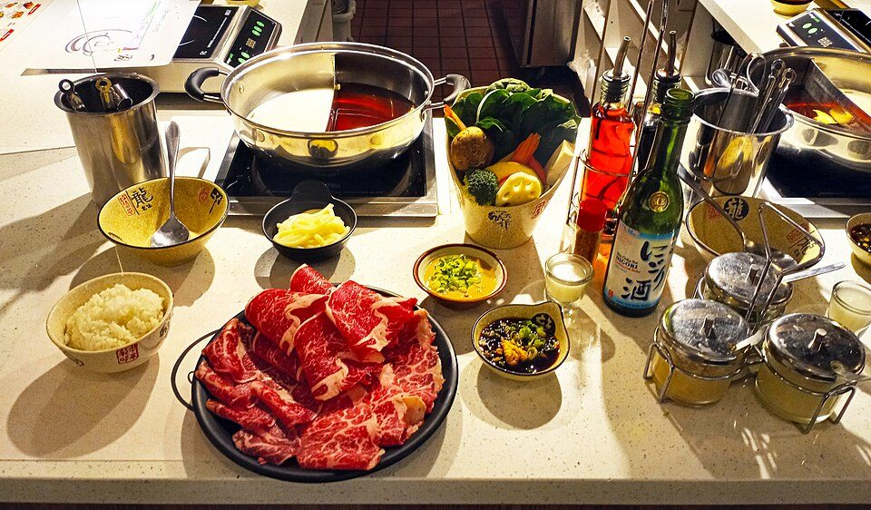
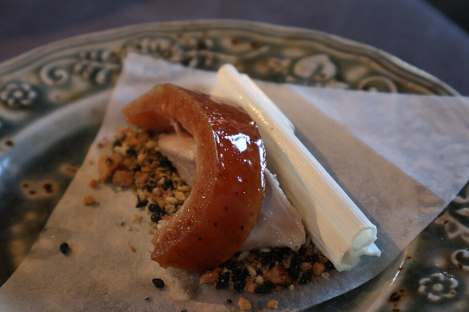
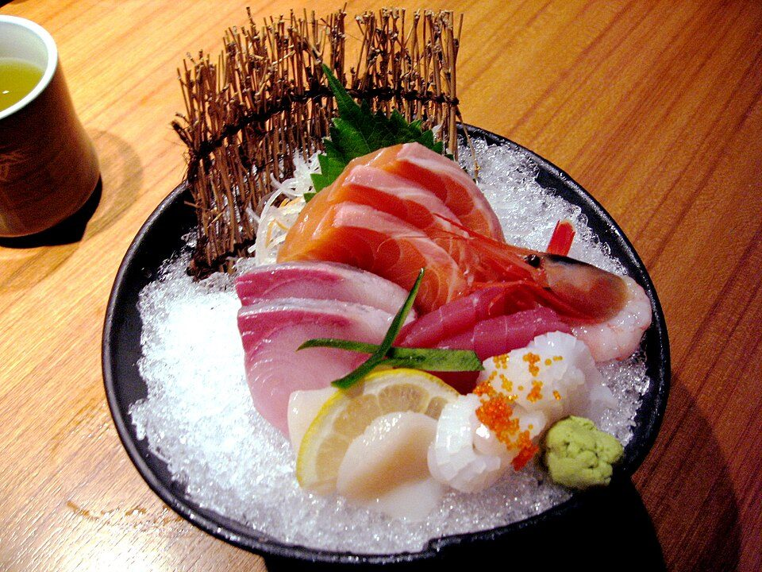
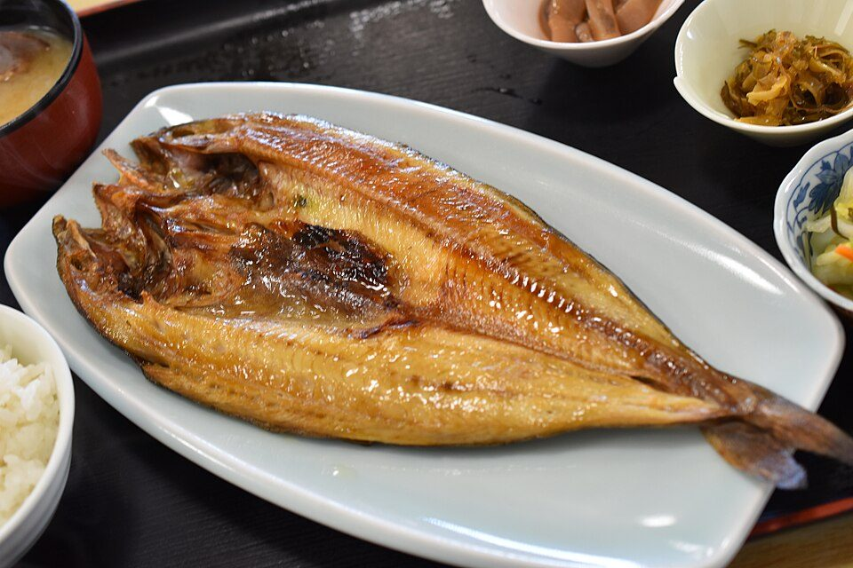
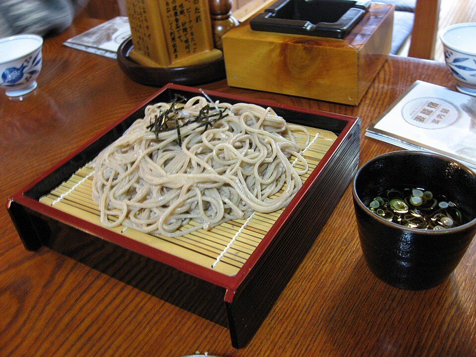
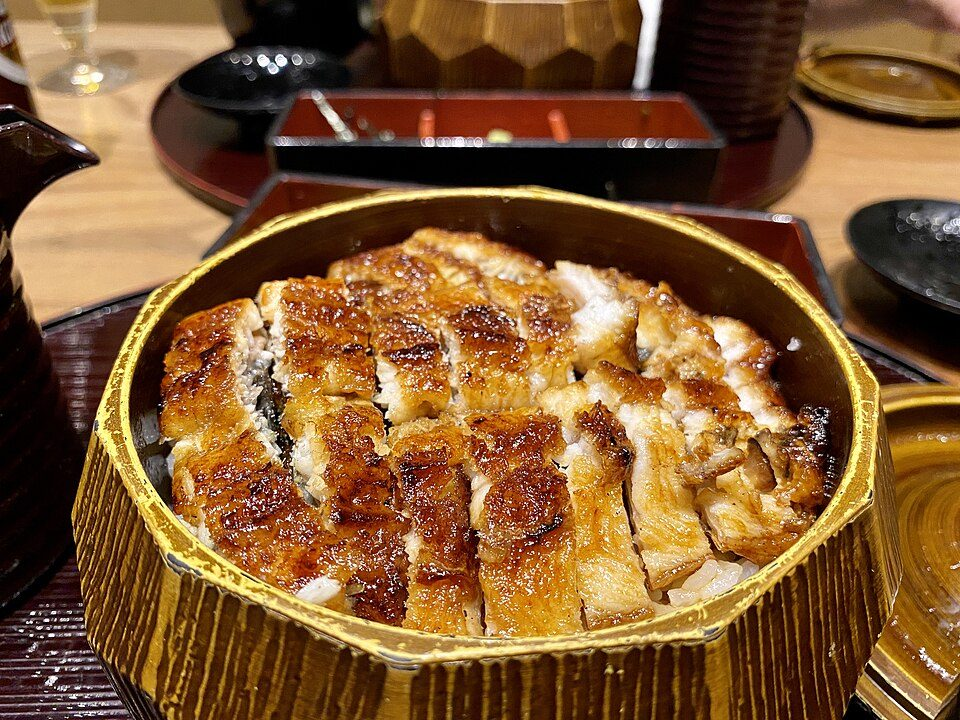
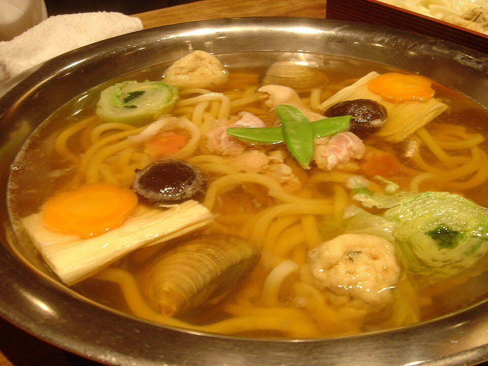
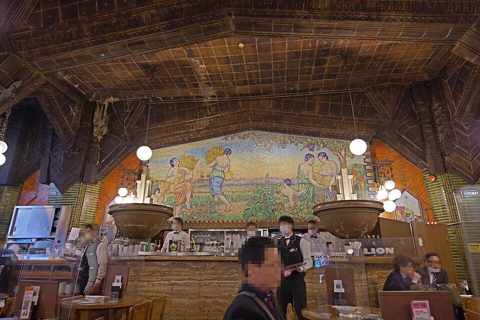
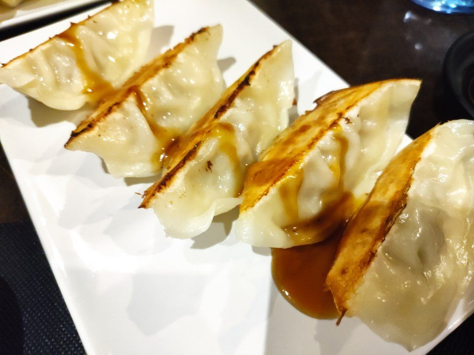

創作和食ちょっと奮発
地上200mの46階。窓の外に東京タワーと東京湾。今回いちばんの景色です。
汐留の夜景(イメージ)
黒豚しゃぶしゃぶ
大きな窓から銀座の夜景。鍋を囲めるのが冬にうれしい。窓際は予約時に相談を。
イメージ写真
タイ料理
木曜もOKのコースが予算ぴったり。いつもと違う味で乾杯できます。
北京ダック
夜景の見える個室で北京ダックを好きなだけ。駅からすぐで帰りも楽です。
海鮮・和食
1975年創業の老舗。家庭的な接客で落ち着ける店です。
干物・海鮮
干物の専門店。焼きたての魚を囲んでゆっくり話せます。
そば・和食
信州そばで締められます。早めに集まってGINZA SIXで買い物も。
和食・日本酒
締めのひつまぶしと土鍋ご飯が名物。個室が3サイズあって取りやすそう。
日本酒・鍋
11月は鍋の季節。個室は1部屋だけなので決めたら早めに予約を。
ビヤホール・洋食
日本最古のビヤホールで建物は登録有形文化財。銀座らしさ満点。
店内の写真
スペイン料理
飲み放題付きで予算内。パエリヤを4人で取り分け。
中華・餃子
銀座の餃子の老舗。量が多いので4人で分けるのにちょうどいい。閉店は早め。
ライオンの写真は実際の店内です。ほかの写真はイメージです(Wikimedia Commons)。